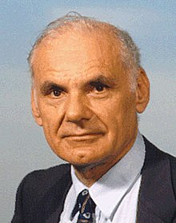

Paul Baran |
 Vannevar Bush |
 Vinton Cerf |
 Douglas Engelbart |
 Robert E. Kahn |
 J.C.R. Licklider |
 Robert Metcalfe |
 Lawrence Roberts |
Paul Baran (1926. április 29. - 2011. március 26.)
Paul Baran (született Pesach Baran) lengyel-amerikai mérnök, úttörő volt a számítógépes hálózatok fejlesztésében . Egyike volt a csomagkapcsolt kapcsolás két független feltalálójának , amely ma a számítógépes hálózatok adatkommunikációjának meghatározó alapja világszerte, majd számos céget alapított, és olyan technológiákat fejlesztett ki, amelyek a modern digitális kommunikáció elengedhetetlen részét képezik .
Miután 1959-ben csatlakozott a RAND Corporation-hez, Baran elvállalta egy "túlélhető" kommunikációs rendszer megtervezésének feladatát, amely képes fenntartani a kommunikációt a végpontok között a nukleáris fegyverek által a hidegháború alatt okozott károkkal szemben.
Forrás:Wikipédia